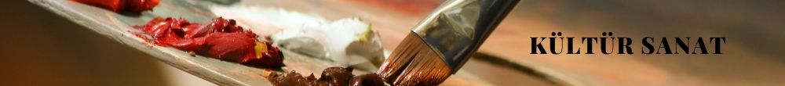
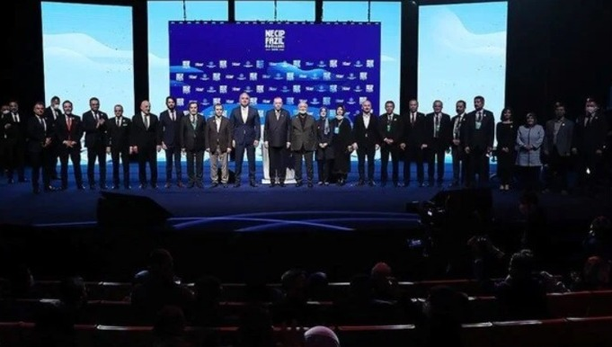
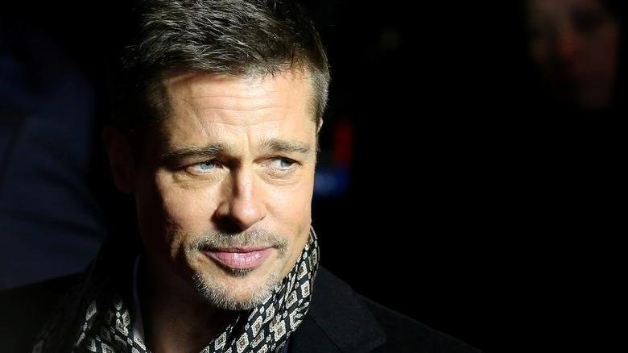

2021 Necip Fazıl Ödülleri Sahiplerini Buldu...
Necip Fazıl Kısakürek'in manevi ve kültürel mirasını yaşatmak amacıyla verilen 2021 Necip Fazıl Ödülleri, Atatürk Kültür Merkezi'nde düzenlenen törenle sahiplerini buldu.
Star gazetesi tarafından Kültür ve Turizm Bakanlığı'nın desteğiyle "İnanç zaferin müjdecisidir" teması ile sunulan ödüllerin bu yıl sekizincisi düzenlendi. Prof. Dr. M. Fatih Andı, Prof. Dr. Hicabi Kırlangıç, Prof. Dr. Turan Karataş, Dr. Ahmet Murat Özel ve Necip Tosun'dan oluşan jüri, Türkiye'nin edebiyat ve düşünce dünyasında önemli yeri olan isimleri belirledi. Cumhurbaşkanı Recep Tayyip Erdoğan'ın da katıldığı törende konuşan Kültür ve Turizm Bakanı Mehmet Nuri Ersoy, Kısakürek'in şiirleri ve düşüncesiyle büyük bir etki uyandırdığına vurgu yaparak, "Düşünce alanında ortaya koyduğu eserlerle bir neslin düşünce dünyasının oluşumunda büyük etkiler yapan bir fikir adamıydı. Ancak Necip Fazıl'ın milletin kalbinde böylesine derin izler oluşturmasına neden olan özelliğinin, kendisine getirilen sınırları yeterli görmeyen, zor zamanda konuşmaktan çekinmeyen, kendi ülkesinde parya olmayı reddeden cesur bir şahsiyet olmasından kaynaklandığına inanıyorum" dedi. Bakan Ersoy, Kısakürek'in Çile, Bir Adam Yaratmak ve Reis Bey gibi Türk edebiyatına unutulmaz eserler bıraktığını söyleyerek, şunları kaydetti: "Necip Fazıl, cumhuriyet dönemimizin en üretken edebiyatçılarından biri olmuştur. Fakat o sadece bir şair değildi. O, davası olan bir şairdi. Türk- İslam düşüncesinden aldığı ilhamla nesillere dava şuuru kazandıran, şiirleriyle ruhları, düşünceleriyle de zihinleri doyuran büyük bir fikir işçisiydi. Bu yolun çilelerle dolu bir yol olduğunun o kadar bilincindeydi ki, tüm şiirlerini topladığı eserine 'Çile' adını layık gördü. Bu büyük şaire, bu ülkeye kattığı güzellikler adına müteşekkiriz. Bu nedenle üstat Necip Fazıl'ın edebi, düşünsel ve şahsi mirasının yaşatılmasına katkı sağlaması nedeniyle bu yıl sekizincisi düzenlenen Necip Fazıl Ödülleri'nde emeği geçen herkese şükranlarımı sunuyorum."

Brad Pitt Müzik Sektörüne Giriyor!
Brad Pitt, 20. yüzyılın en etkili müzisyenlerinden bazılarının kullandığı kayıt stüdyosunu yeniden canlandırıyor.
Oyuncu; Pink Floyd, AC/DC, The Cure ve Sting tarafından kullanılan ünlü Miraval Studios’u yeniden açmak için Fransız yapımcı Damien Quintard ile birlikte çalışıyor. Miraval Studios Instagram sayfasında Quintard, kendisinin ve Pitt’in şimdiye kadarki en ikonik kayıt stüdyolarından birini yeniden tasarladıklarını söyledi: “Pink Floyd, The Cranberries, AC/DC ve daha birçokları tarafından orada kaydedilen şarkıların zamansızlığı, yakında günümüzün sanatçıları için geri dönecek.” Mülk, kayıt stüdyosuna bakan bir asma kat, bir yüzme havuzu ve ziyaret eden sanatçıların kalabileceği bir alanla donatılmış durumda. Quintard, stüdyonun olağanüstü bir doğal yankıya sahip olduğunu, böylece stüdyonun herhangi bir yerinde sesleri veya enstrümanların kaydedebilineceğini söylüyor. Oscar ödüllü Pitt, stüdyoyu 2008’de Fransa’nın Correns kentindeki Château Miraval malikanesini, Angelina Jolie ile birlikte satın almıştı. Çiftin 2012 Jolie-Pitt & Perrin Côtes de Provence Rosé Miraval’ı, endüstri dergisi Wine Spectator tarafından en iyi gül olarak derecelendirildi. Daha sonra bir şişesi 18 sterline mal olan şarap, ilk 100 şarap listesinde 84. sırada yer aldı.
SON DAKİKA HABERLERİ
John Doe
Some example text some example text. John Doe is an architect and engineer
Haberin detayı için tıklayınız.John Doe
Some example text some example text. John Doe is an architect and engineer
Haberin detayı için tıklayınız.John Doe
Some example text some example text. John Doe is an architect and engineer
Haberin detayı için tıklayınız.John Doe
Some example text some example text. John Doe is an architect and engineer
Haberin detayı için tıklayınız.